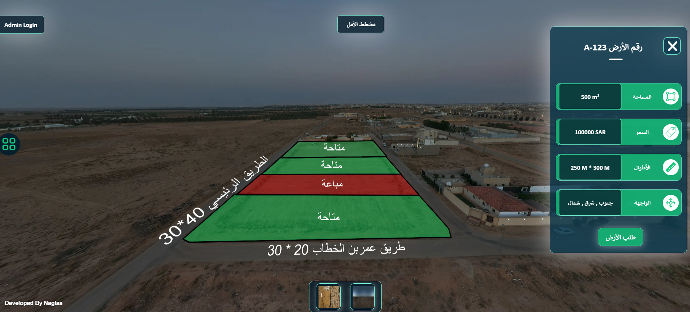
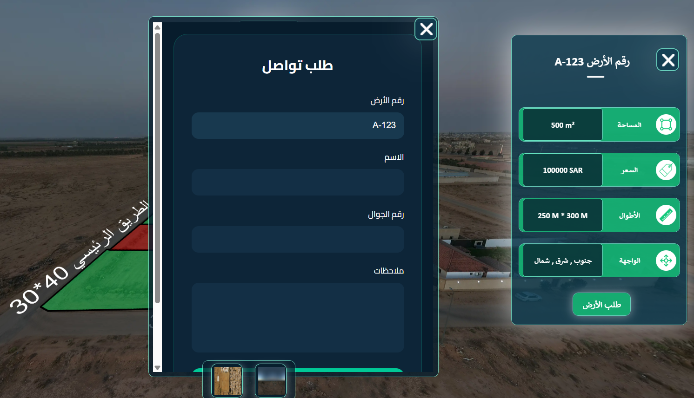
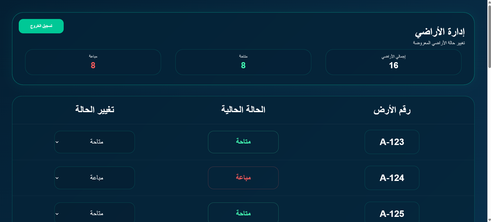

المخططات التقليدية تُعرض كصور ثابتة أو بروشورات PDF، ما تعكس حالة القطع لحظيًا، وتترك العميل يتواصل عشوائيًا لمعرفة أي أرض متاحة وأيها مباعة. النتيجة: وقت مهدر على فريق المبيعات، وتجربة عميل مربكة.
نظام المخطط الذكي يحوّل مخطط الأراضي إلى منصة تفاعلية: العميل يستكشف القطع بصريًا على صورة جوية للمخطط، يشوف حالتها فورًا (متاحة / مباعة) وتفاصيلها الكاملة، ويرسل طلبه مباشرة — بينما تدير أنتِ حالة كل قطعة من لوحة تحكم واحدة.
صورة جوية تفاعلية للمخطط، مقسّمة لقطع ملوّنة حسب حالتها — أخضر للمتاحة وأحمر للمباعة. عند الضغط على أي قطعة تفتح بطاقة تعرض رقمها، مساحتها، سعرها، أطوالها، وجهاتها بشكل فوري وواضح.

من نفس بطاقة القطعة، يقدر العميل يفتح نموذج "طلب الأرض" ورقم القطعة يتعبّى تلقائيًا، فقط يضيف اسمه ورقم جواله وملاحظاته — بدون تشتت أو خطوات إضافية، مما يرفع فرصة تحويل الاهتمام إلى تواصل فعلي.
وصول خاص بفريق المبيعات أو المطوّر العقاري عبر بريد إلكتروني وكلمة مرور، بعيدًا تمامًا عن واجهة الزوار العامة.

إحصائيات لحظية لعدد القطع المتاحة والمباعة والإجمالي، وجدول يتيح تغيير حالة أي قطعة أرض بضغطة من قائمة منسدلة — والتحديث ينعكس مباشرة على الخريطة التي يشاهدها الزوار، بدون تدخل تقني.